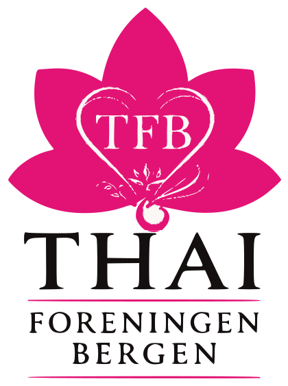
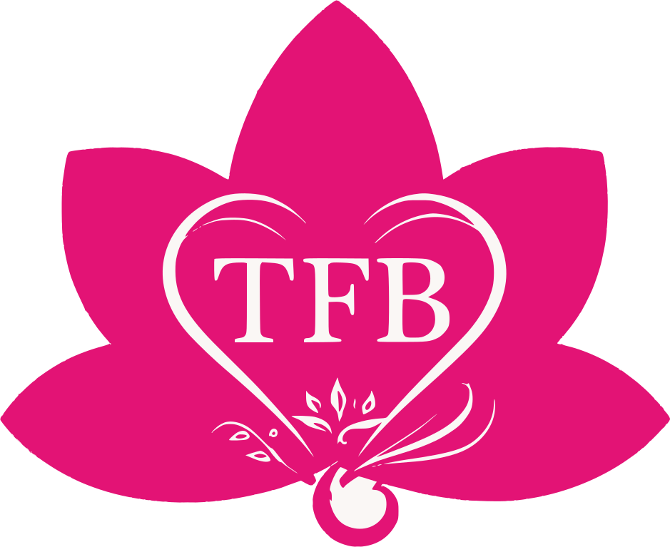
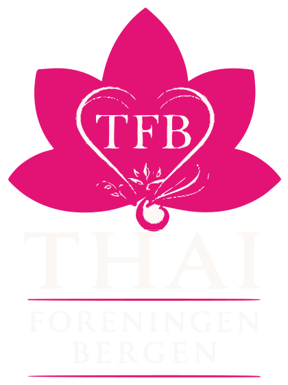
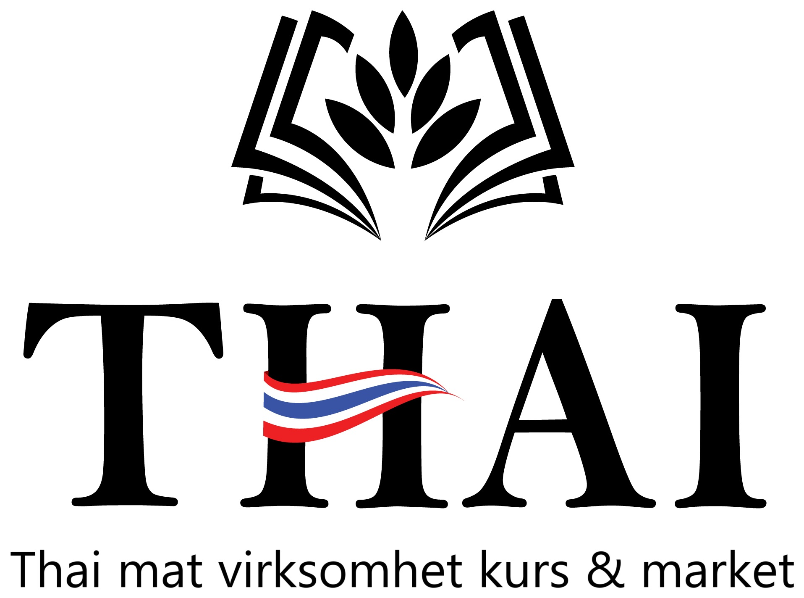

Tokens, typefaces, and components for the TFB website. Every number on this page is measured, not asserted. Contrast ratios are computed in the browser from the token values themselves.
Org.nr 996 630 307 · Founded in Bergen, 8 January 2010 · Revision 2
Three assets, each with a size range it owns. The supplied artwork is decorative and detailed, which is exactly why it must not be asked to work at 24px.

Mark above THAI, a magenta rule, FORENINGEN BERGEN, a second rule. Used once per page at most: the footer, the OG image, printed material. Not in the sticky header, where it is too tall and too detailed.

Petals, heart, TFB, filigree. Measured on the supplied file: the heart outline is an 18px stroke on the 939 x 767 artwork, and the filigree runs at 3px. The heart holds a full device pixel only from 56px, the filigree only from about 320px. So 96px is the working floor, and full fidelity wants 320px and up.
Five petals, nothing else. Inline SVG, single path group, currentColor, so it inherits ink on paper and paper on ink without a second file. Each petal is the same lens shape as the image mask, which is why the mark and the photography read as one system.

--ink the reduced mark goes to --paper, never magenta, and the lockup switches to the inverse file. The default lockup has a pure black wordmark and must never be placed on a dark ground.The supplied banner is the one sanctioned lockup-on-photo treatment, and it works because the photograph is already washed to near-white behind the type. Any other photograph needs the same wash, at 82 per cent paper or lighter, measured, not eyeballed. This treatment appears on the banner alone. It is not a hero pattern, and the homepage hero does not repeat it.

An open book with leaves growing out of it, education and food in one mark, over THAI in the same Roman capitals as the association lockup, with a Thai flag ribbon through the wordmark. Strapline: Thai mat virksomhet kurs & market.
Because both lockups set THAI in the same Roman capital, the two brands already read as a family. That shared letterform is the link, not a shared colour, and it is also independent evidence that Marcellus is the right display face.
The association mark is magenta. The courses mark is black with a red and white and blue ribbon. Those palettes do not merge, so the site does not try.
Measured on the artwork, the flag colours are 0.6 per cent red and 0.4 per cent blue of the mark. They are incidental, they live inside the ribbon, and they never become site tokens. No red or blue enters the palette.
The courses mark appears at the head of the courses section and on course pages. Nowhere else. The association mark never appears inside that section, so the two never sit side by side competing.
| Placement | Asset | Size | Colour |
|---|---|---|---|
| Sticky header | Reduced mark plus wordmark set in Marcellus | 36px tall | Magenta mark, ink wordmark |
| Footer, on ink | Inverse lockup, or the reduced mark plus a text wordmark | 40px tall | Paper on ink |
| Favicon and app icon | Reduced mark | 16, 32, 180, 512 | Magenta on paper |
| Print, roll-up, poster | Primary lockup | 320px and up | Supplied artwork |
| Courses section and course pages | Courses sub-brand mark | 64px tall, 48px on mobile | Black as supplied, light grounds only |
| OG and social card | Primary lockup | 1200 x 630, lockup at 340px | Supplied artwork on paper |
| Banner, /about pages | Supplied banner | Full width | As supplied |
| Empty states, dividers | One petal outline from the reduced mark | 12 to 48px | Rule colour, 1px stroke |
| File | Canvas | Ink bounds | Note |
|---|---|---|---|
| logo-mark.svg | 939 x 767 | trimmed | Vector, magenta #E31375 with paper detail. The working mark for all editorial use at 96px and up. |
| logo-lockup.svg | 420 x 562 | trimmed | Vector. Wordmark #14100F, so light grounds only. |
| logo-lockup-inverse.svg | 420 x 562 | trimmed | Vector. Wordmark #FAF7F5 for dark grounds. Verified as a genuinely different file, not a duplicate. |
| logo-courses.png | 1915 x 1423 | trimmed | Courses sub-brand, trimmed from Logo2.jpg which carried 20 per cent white margin. Still raster on an opaque white background, so it cannot sit on --petal or any tinted band. A transparent SVG is the one asset still outstanding. |
| banner.jpg | 1983 x 793 | full bleed | 2.5:1. The lockup reads only because the photograph is already washed to near-white behind it. |
| TFB logo.png | 1254 x 1254 | opaque | Original supply, RGB with a white background and no alpha. Archive only. Do not reference it from the site; use logo-mark.svg. |
Outstanding: a transparent vector of the courses mark. Everything else is now vector and correctly trimmed.
Marcellus, one weight, 400. A Roman inscriptional capital from the same tradition as the Trajan-style letters in the TFB wordmark, so the page and the logo speak one language. Single weight is deliberate: hierarchy comes from size and hairline rules, not from weight soup. Headings and section labels only, never below 20px, never in UI.
We help Thai people in Bergen and Vestland deal with the police, lawyers, hospitals and the crisis centre. We keep Thai traditions alive here, and we run the courses you need to work in a Norwegian kitchen.
Public Sans, variable 300 to 700. The typeface of the US Web Design System, drawn from Libre Franklin for public-service interfaces. A civic face by origin, which is the exact register this organisation needs, and it is built for small sizes, dense tables, and forms.
เราช่วยคนไทยในเบอร์เกนและเวสต์ลันด์ ติดต่อตำรวจ ทนาย โรงพยาบาล และศูนย์ช่วยเหลือ เรารักษาประเพณีไทยไว้ที่นี่ และจัดคอร์สอบรมที่จำเป็นสำหรับการทำงานในครัวที่นอร์เวย์
Sarabun, 400 and 600. Drawn by Cadson Demak and one of Thailand's national typefaces, used across official Thai government documents. It carries in Thai the same civic authority Public Sans carries in Latin, which is the whole argument for the pairing. Real Thai design, not a Latin face with Thai glyphs attached.
The scale stops at 17. There is no caption size, no legend size and no fine-print size below it, because a step below 17 would be unreadable for the readers this site is built for. Marcellus stops at 20, which is why section labels and eyebrows set at 20 and not lower.
| Thai size ratio |
| Thai line-height 1.85 |
| Thai letter-spacing 0 |
| Thai never uses Marcellus |
lang on every switch |
| Subsets |
Emergency contacts are never reported to the board, and no record is kept.
Henvendelser om akutt hjelp blir aldri rapportert til styret, og det føres ingen logg.
การติดต่อขอความช่วยเหลือฉุกเฉินจะไม่มีการรายงานให้คณะกรรมการทราบ และไม่มีการเก็บบันทึกใดๆ
Eight tokens. No ninth. Magenta stays under roughly five per cent of pixels on any full page.
--lotus is sampled from the supplied artwork, not chosen. The dominant fill in logo-mark.png is #E31375, which is redder than it looks on screen. It measures 4.23:1 on --paper, below the 4.5:1 AA threshold for normal text.
So --lotus is display and graphics only: 24px and up, or 18.66px bold, where the 3:1 large-text threshold applies.
Every link, label, caption and table cell uses --lotus-deep. Never put --lotus on a body string, including eyebrow labels if they drop below 24px.
| Radius |
| Petal mask |
| Hairlines |
| Grid |
A heading sits on a 1px rule with its label breaking through the rule on the left, the way a printed programme sets a running head. Every section on this page uses it, and so does every specimen frame around it.
The site ships no transitions, no keyframes and no animation library. That is not an omission waiting to be filled in. It is the position.
This page said otherwise for several
rounds. It specified a 220ms section entrance from zero opacity, a hero mask
animating its border radius on mount, a course row expanding on height, and it named
whileInView as the mechanism. None of it was true. There is no hero.
Course rows do not expand. whileInView belongs to an animation library
that is not a dependency of this project and never was.
The entrance
animation was real once, and it caused the worst rendering bug this project shipped:
eight blocks of the homepage were served with opacity: 0 in the server
HTML and stayed invisible for anyone whose JavaScript had not run. On a site people
reach in a crisis, a section that is invisible until a script proves itself is not a
flourish. The animation was removed. The specification for it stayed here, describing
a site that did not exist, which is why this section now reads the way it does.
| Case | Property | Duration |
|---|---|---|
| Focus ring on a control | outline, browser default | none |
| Hover on a link | text-decoration, colour | none |
| Everything else | none | 0 |
Hover and focus change state instantly. A 140ms fade on a link colour is not motion design, it is a delay between a person acting and the page admitting it.
The section line is pinned to the top of the viewport at every scroll position on every page, and it carries the Krisesenteret number in lotus-deep at its right edge. One persistent bar does both jobs: it is what a person navigates from, and it is where the emergency number always is.
The full emergency notice, with the hours and the offer of an interpreter, sits once at the top of the document in normal flow. It is deliberately not pinned. It was, for one round, and that was wrong: a black band fixed to the top of every page becomes the topmost persistent element on the site, which is the position a reader reads as the navigation, and it was not navigation. The client said so in four words.
Before that round the bar was not pinned
either, while this page and the component's own docstring both said it never moved.
The rendered measurement put it at y -3611 on the homepage, three
thousand pixels above the fold and gone. Twice now the claim and the page have
drifted apart, in opposite directions, which is the argument for measuring the
rendered result rather than reading the intent.
Sits above the masthead in normal flow, one line where there is room. On mobile the whole bar is the tap target and the right text drops. It does not animate, collapse, or reveal.
Five items, matching the embassy's count. Text switcher, no flags, no globe icon, no dropdown, each one a real link to the same route in that locale. The active item carries a 2px magenta underline sitting on the header rule.
Below 700px the header collapses to mark, wordmark, and the word Menu beside a two-line glyph. The panel slides down from the header at 220ms with the language switcher at its top, never buried at the bottom. Narrow this window to see the specimens above reflow.
Call the crisis centre directly. It is free, open every day of the year, and you do not need to be a member. Bring identity documents for yourself and your children if you can.
55 31 50 50 ›We help with interpreting and translation, and with understanding a letter from NAV or UDI before a deadline passes.
Read more ›Copy lengths differ per block on purpose, because the situations differ. Hover moves the rule to magenta and shifts the arrow 4px. Nothing else.
Solid ink primary, text plus 2px magenta underline secondary. 2px radius. No gradient, no shadow, no icon unless the action is a phone call.
Never an empty grid. The legacy site left the event calendar blank for years, so empty states are designed, not skipped.
| Course | Next date | Language | Price | |
|---|---|---|---|---|
| Food hygiene, IK-mat | To be announced | Thai and Norwegian | To be announced | Register |
| HSE for managers, HMS for ledere | To be announced | Norwegian | To be announced | Register |
| Fire safety, Brannvern | To be announced | Thai | Free | Register |
| Food allergy, Matallergi | To be announced | Thai | To be announced | Register |
A table, not cards. Every course is 800 kr, so price is not a differentiator and the filter sorts by regulator instead, which is what a kitchen worker actually searches by: whichever certificate the inspector asks for. The 6 to 8 cap is a real scarcity fact and sits beside the action, stated plainly rather than as a countdown. Unset dates link to the enquiry contact, never a fabricated date. Below 900px this becomes stacked definition blocks, live in this page, never a horizontally scrolling table.
Payment here goes to Thai Restaurantvirksomhet Kurs, org.nr 924 409 509, a different legal entity from the association. The section carries its own entity block, and course income never appears in the association's accounts.
Founded in Bergen, 8 January 2010
Org.nr 996 630 307
Affiliated with the local frivilligsentral
Help · Courses · News
Membership · About
Events · Culture · Contact
emergency@ · post@
membership@ · complaint@
Payment details are being set up.
Four unequal columns at 4/3/3/2. No newsletter signup. No social icon larger than 20px. The support column shows its empty state rather than a placeholder account number.